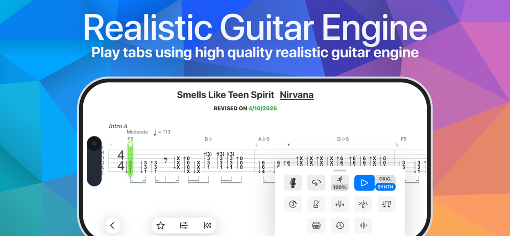

Songsterr 手机练琴踩过的五个坑
从快捷键到 AI 扒谱，从订阅同步到版权焦虑——这篇把我用 Songsterr 手机版大半年遇到的麻烦逐个拆开，附防坑清单。
开头：看着简单，其实有坑
去年秋天从官网拿到了 Songsterr 手机版练吉他，App Store 评分 4.7，界面干净，一百多万曲库随便挑——一开始感觉找对东西了。但连续踩了几个坑之后才发现，这东西远不止"装个 App 搜个谱"那么简单。有些坑耽误我好几天，有些到现在还能在论坛上看到新手反复问。这篇把我遇到的、以及帮朋友排查过的五个最常见的坑摊开讲，每个都有症状、原因和解法，最后附一张防坑清单速查。
配图先来一张，这是 Songsterr 10 更新之后的暗色模式界面，练琴时低光环境看着舒服，刚更新时我还以为切换竖屏的按钮不见了——那就是第一个坑的开始。

坑一：快捷键按着没反应，以为手机坏了
症状：从朋友那里听说 Songsterr 有一堆快捷键能加速练琴，什么空格播放、S 变速、L 循环——兴冲冲在 iPhone 上打开 App，用蓝牙键盘敲了一圈，屏幕毫无反应。
原因：快捷键表是网页版专属的，移动端 App 不支持键盘快捷键。而且网页版那一堆快捷键里，至少一半是 Plus 订阅专属的（变速 S、循环 L、打印 P），免费用户即使在网页上按了也是石沉大海。我当时就是拿着移动端的 App 去试网页版的快捷键，白折腾了十分钟。
解法：移动端控制全靠手指——双击谱面任意小节跳转，点底部播放条旁边的循环图标开循环，变速拖动右上角的滑块就行。想背快捷键提升效率的话，那是电脑上的事。Songsterr 网页版和手机 App 的交互逻辑是两套体系，别混着用。
坑二：AI 扒谱草稿直接发布，被改到认不出来
症状：自己搜不到某首歌的谱，听说 Songsterr 有 AI 转录功能，扔了个 YouTube 链接进去生成了一份草稿，看了一眼感觉"差不多"就点了发布。几天后再搜自己的谱，和弦标记被人改了三分之一，节奏组整段重排——完全不是自己扒的那版了。
原因：AI 扒谱生成的只是草稿，官方自己也承认机器在和弦细节和节奏上容易出错。直接发布等于把一张未校对的考卷交了上去——Songsterr 采用的是维基式的协作修订机制，其他用户可以随意编辑任何已发布的谱面，AI 草稿里的瑕疵恰恰会成为修订的"突破口"，大家来改的时候顺手就动了。
解法：发布前务必自己通读一遍。和弦按对了吗？节奏组的时值标对了吗？力度记号（重音、断奏、渐强渐弱）机器几乎百分百漏标，这些靠人工补。尤其是原曲有强弱变化的段落，合成播放和自己听原曲对比一下——差得远的地方就得手动调整。贡献谱子不是随手甩出去就完事的事。
坑三：版权焦虑不敢上传，白白浪费曲库扩展机会
症状：想自己动手扒一首歌然后上传，打开编辑器写了两小节又关掉了——总觉得上传谱子会不会被版权方找上门，平台会不会被下架牵连自己。这种想法在练琴群里不是一个两个人有。
原因：Songsterr 官方的版权处理机制大多数人不知道。平台与音乐创作者签有正式许可协议，近一半的运营收入直接用于支付版税。这意味着你在平台上做的贡献——无论是 AI 转录还是手动编辑——都在这个许可框架之内，用户层面不会有任何版权风险。但这件事 Songsterr 放在帮助中心的 FAQ 里，首页和编辑器入口都没有显式提示，新手不知道很正常。
解法：去Songsterr 文档里看一下那条直接问"我会因版权侵权惹上麻烦吗"的 FAQ，官方的回答是明明白白的"完全不会"。看完这个就放心了——你不是在盗版，是在参与一个合法的社区协作项目。如果还是担心，贡献之前先搜一遍，同曲异名的情况挺常见，确认真的没有再动手。
坑四：订阅买在一个端，换设备发现不同步
症状：iPhone 上通过 App Store 订阅了 Songsterr Plus，想在电脑网页上继续变速循环练琴——发现网页端还是免费版，Plus 功能灰着。以为是 Bug，卸载重装 iPhone App 还是没解决。
原因：Plus 订阅理论上是三端通用的——iPhone、Android、网页，同一账号一处订阅全端生效。但这里有个关键前提：你必须用同一个 Songsterr 账号登录所有端。很多人第一次用 iPhone 版是点了"Guest"或者没登录，后来买订阅走的是 App Store 内购，这个订阅绑在 App Store 账号上而非 Songsterr 账号上。到了网页端，用的又可能是另一个邮箱注册的 Songsterr 账号，当然看不到 Plus 权益。
解法：先确认所有设备上的 Songsterr 登录的是同一个账号。最稳妥的做法是先在网页端注册一个 Songsterr 账号（邮箱 + 密码），然后 iPhone 和 Android 上也用这个账号从下载渠道获取应用并登录，再去任意一端订阅 Plus。这样无论从哪个端买，权益都跟着 Songsterr 账号走，不会丢失。
坑五：竖屏模式找不到，以为被下架了
症状：Songsterr 10 更新后听说加了竖屏模式——iPhone 上竖着拿手机能看得更清楚。但打开 App 无论怎么转都还是横屏，也没找到切换按钮，以为这个功能被砍了或者需要额外订阅。
原因：竖屏模式是 Songsterr 10 大版本更新的新功能，但它的触发方式是自动跟随设备方向——你把手机竖过来它就自动切竖屏，横过来自动切横屏。如果你的 iPhone 开启了"竖排锁定"（屏幕右上角的那个锁形图标），那 App 永远只能横屏。我当时就是锁了屏幕旋转，折腾了五分钟才反应过来。
解法：关掉竖排锁定，把手机竖过来就行。切竖屏之后谱面自动纵向排版，字体更大，手指点选也更舒服——练琴的时候一只手拿着吉他，另一只手操作手机，竖屏确实比横屏顺手。iPad 上横竖屏切换更灵活，分屏多任务也能用。
防坑清单
最后把五个坑浓缩成一张速查表，下次遇到问题先扫一眼：
- 移动端别试网页版快捷键——两套交互逻辑，蓝牙键盘敲空格不会有反应
- AI 扒谱草稿必须自己校对完再发布——机器漏的力度记号和弦错的地方等你补
- 版权问题放心贡献——官方与创作者有许可，不会找用户麻烦
- 订阅前先确认所有端登录同一个 Songsterr 账号——避免权益不同步
- 竖屏模式自动跟随设备方向——如果不生效先检查有没有锁屏幕旋转
知道这些坑之后，Songsterr 其实相当省心。一百多万曲库加上越来越活跃的社区贡献，配合移动端的便携性——练琴这件事，只要避开上面这几个坎儿，就能用得相当顺畅。
补充一句：这套资料在 GitHub、Gitee、GitCode 三个仓库都能拿到，无论你平时习惯用哪个托管平台，搜"APK"就能找到对应的手机版分类目录，Songsterr 相关的文档和说明都在里面。